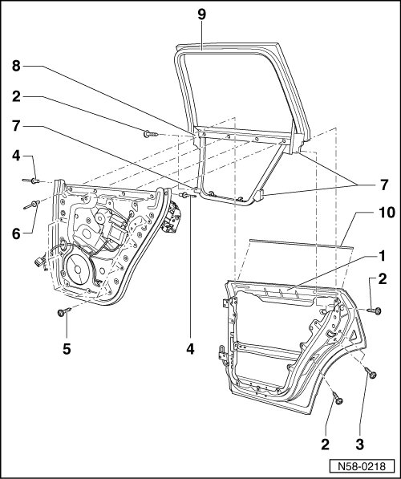

Rear Door Assembly Overview
Rear Door Window
Rear Door Assembly Overview

Construction of the Touareg door differs considerably from that of other models.
Entire door consists of outer door panel - 1 -, assembly carrier - 6 - and window frame - 9 -. When assembly carrier and window frame are joined together, it is referred to as a subframe.
Assembly carrier and window frame cannot be completed individually. Only when they are combined to form the subframe can individual parts be installed.